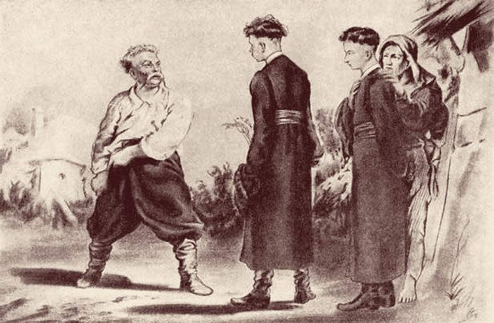

Где и когда
Украина, XVI–XVII века
Цифрами отмечены места действия повести: 1 Киев, 2 Сечь, 3 Дубно, 4 Варшава, 5 Днестр. Пунктир – путь героев.

История · сюжет · герои и их выбор · смысл повести
Листай карточки вправо. Это эпоха, без которой повесть не понять.
Цифрами отмечены места действия повести: 1 Киев, 2 Сечь, 3 Дубно, 4 Варшава, 5 Днестр. Пунктир – путь героев.
В 1569 году Польша и Великое княжество Литовское заключили договор – Люблинскую унию (уния – союз) – и стали одним государством. «Речь Посполитая» – «общее дело». Столица – Варшава.
Земли Украины с Киевом перешли под власть польского короля. Польские паны получали поместья, закрепощали крестьян, вводили налоги – даже «с дыма», то есть с каждой хаты.
Снова «уния» – теперь союз церквей. Часть православных епископов подчинилась папе римскому: возникла униатская церковь. Православных стали притеснять, их храмы отдавали униатам. Для казаков это – измена вере отцов.
Слово «казак» значит «вольный человек». От панской неволи в дикую степь бежали крестьяне, горожане, обедневшие шляхтичи – люди разных народов, но православные.
Казаки защищали землю от набегов крымских татар и турок, ходили в морские походы.
Укреплённый лагерь казаков за днепровскими порогами (отсюда «Запорожье»), на острове Хортица. Принимали любого православного мужчину, о прошлом не спрашивали. Женщин не пускали.
главный закон – товарищество
Казаки не раз восставали против польских панов. Северина Наливайко (1590-е) казнили в Варшаве; в народе говорили, что его сожгли в медном быке. В 1638 году восстали Остряница и Гуня.
Историческая повесть – вымышленные герои среди реальных событий.
Цитаты – по учебнику: Литература. 7 класс. Ч. 1 / В. Я. Коровина и др. – М.: Просвещение, 2024. Иллюстрации П. П. Соколова.